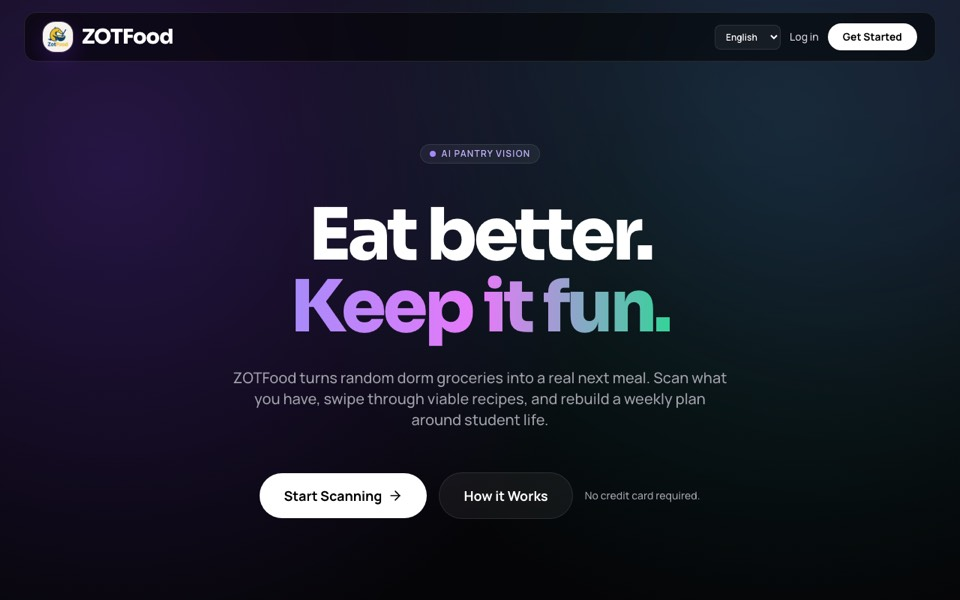

Front-end interfaces, creative tooling, automation, and data presentation.
Professional Academy Portfolio
A professional homepage built to read like a portfolio, resume, and CV.
I build front-end experiences, automation experiments, and data-driven product work with a focus on clarity, structure, and visual polish. This page is designed as a fast, credible summary for recruiters, collaborators, and academic reviewers.
- Front-end presentation that favors hierarchy, readability, and motion restraint.
- Project-based proof across web UI, AI-assisted tools, and data storytelling.
- Public build trail through GitHub Pages, live demos, and versioned site work.
Ship-first, design-aware, and strongest when code and presentation are treated together.
GitHub-backed portfolio with live project links and a printable resume layer.
About
Professional summary
What I build
My work sits between interface design, implementation, and experimentation. I am most interested in digital products that feel usable immediately but still carry some point of view in the visuals and interaction design.
How I work
I like translating concepts into something people can actually open, test, and react to. That means simple stacks, visible iterations, and enough attention to craft that a project feels finished instead of merely functional.
Why this homepage exists
Rather than separating portfolio, resume, and CV into disconnected documents, this homepage combines project evidence, technical context, and a concise professional profile in one place.
Selected Work
Projects that show range and execution

AI product build
ZotFood
An AI-assisted culinary product focused on pantry tracking and recipe generation. The interface is designed to feel useful first, with AI acting as an assistant rather than the entire product story.
- Shows product framing, interface organization, and applied AI workflows.
- Demonstrates a more practical tone than a novelty-first AI demo.
- Useful as evidence of shipping interactive web work with a clear user task.

Data visualization
Anime Dojo
A data exploration app that turns anime statistics into a more readable and engaging experience. It functions as a proof point for Python-led interface work and visual storytelling around data.
- Shows comfort translating datasets into a clearer front-end presentation.
- Balances utility and personality instead of defaulting to spreadsheet aesthetics.
- Acts as portfolio evidence for lightweight product thinking with data.
Portfolio system
This homepage
The portfolio itself is part of the work. It is a versioned, public-facing front door that documents visual decisions, writing choices, and the effort to present technical work with stronger structure.
- Demonstrates editorial layout and personal branding without relying on templates.
- Connects live projects, supporting pages, and public code history.
- Now doubles as a portfolio, resume, and CV-style summary.
Resume Snapshot
Condensed profile for fast review
Professional profile
Builder with strengths in front-end presentation, clear visual hierarchy, and practical experimentation. Comfortable using lightweight web stacks, scripting, and public iteration to move ideas from concept to working artifact.
Strength areas
- Responsive HTML and CSS with strong visual structure.
- Python-driven tooling and prototype workflows.
- Product-oriented thinking for AI and data features.
- Version-controlled portfolio and demo presentation.
Creative software
Premiere Pro, After Effects, Photoshop, and motion-oriented visual experimentation.
Recent timeline
-
2026
Homepage rebuilt as a professional portfolio
Reframed the site so it can function as a portfolio, resume, and CV in one view.
-
2025
Linked live AI and data projects
Expanded the site with public project proof including ZotFood and Anime Dojo.
-
2024
Shifted toward building in public
Started using GitHub and public-facing demos as an active portfolio trail.
Skills
Core tools and current learning path
Daily drivers
- HTML
- CSS
- Python
- Java
- C++
- PowerShell
- Design tools
Learning now
- JavaScript
- TypeScript
- Rust
- Kotlin
- Motion and 2D animation
On deck
- Elixir
- C#
- Go
- Clojure
- Additional R&D projects
Contact
Open for review, collaboration, and conversation
GitHub is the strongest path for reviewing current work. Supporting pages on this site add more context about tools, layout thinking, and project direction.